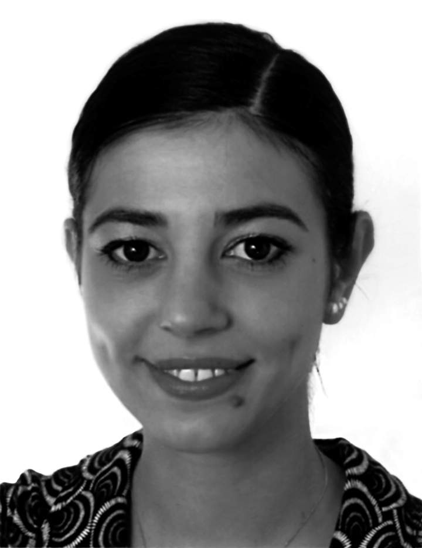

Yan Lei – “I’ m not an artist, I’ m a man!”
Nataline Colonnello
Yan Lei exclusively transposes in the pictorial form -and in his art as a whole- those subjects strictly related to his own daily experience: people he meets, objects he uses, landscapes he views, situations he encounters, images he sees on newspapers and magazines. Talking about the relationship between actuality and his paintings, he explains: "The subjects of my works are highly personal. The reason for their existence in my art is due to the fact that they somehow influence my real life. When I see something that concerns me closely, it is right then that I make use of those images. What will be the feeling of the spectator when observing these works?…well…this is definitively not something I want to modify intentionally to convey an unalterable and pre-arranged significance".
If, based on Yan Leis words, art gives no answers and his art is nothing except what he deems his life is in a certain way conditioned by (it does not matter whether it is objectively important or not), we can gather that in his view life gives no answers. Thus, he seems to be aware of his condition as a human being unable to clench the knowledge of the whole world in his fists. Thats why he selects only the images belonging to his own experience: they are more familiar as well as easier to handle. Moreover, as he explicitly maintained above, he does not want to impose by means of his works, any absolute truth to the observer.
Clearly Yan Lei does not seem to feel up to playing the part of the venerated artist invested with that deifying aura which characterized many famous names along the course of Art History as well as in contemporary times. Perhaps he is not interested in it at all! In other words, he does not seem to be seeking to embody the figure of that shepherd who, using the description made by Angela Vettese in her book "Artists are Made", evokes "(…) not only the role of the flocks leader but also, implicitly, that of a superior being and even of God the Creator: the term enthusiasm, that one so often meets in artists biographies, more or less means entrance of God, as if those who experiences it were put in contact with the divine will in much the same way as prophets, in order to reveal truths unreachable by common people".
In all his works Yan Lei, like the majority of artists, resorts to the support of images. In the past, when he mainly devoted himself to performances, images served as documentations of a work that otherwise would have disappeared as soon as the action had come to an end. Even if the work was a video, for example, it was nothing but a sequence of single images. Generally speaking, moreover, the pictures of performances, installations and so forth, besides being convenient tools able to substitute in a sense the real work when it is not easily movable or reproducible in a different place, are also proofs evidencing the existence (or the past existence) of the work of art itself.
Since the end of 1998, however, pictures started to have a much greater relevance in Yan Leis artistic creation, becoming an essential constituent tool of a quite new trend that characterizes a substantial part of his recent production - the paintings. In the complex pictorial process Yan Lei now uses, the photograph no longer supports the work when the latter is already begun or completed, but even before it exists, the photo now establishes the origin of a painting. Although the time order has changed, the image, intended as a photodocument, keeps its value unaltered. All the pictures Yan Lei employs, as we said above, belong to his daily life and for the most part are taken by him -just a few are from magazines or newspapers. When he takes a picture, undoubtedly he is the arbiter who selects, through the lens, the subject he is interested in: that is to say he is the one who makes the choice between what is to be portrayed and what is to be excluded: as Susan Sontag says, "to photograph means to attach importance to something".
Yan Lei states that he represents his real life, but, as Sontag points out "To claim that photography must be realistic is not incompatible with the opening of an ever-increasing gap between image and reality, in which the mysteriously acquired knowledge and its intensification provided by the picture presuppose a previous alienation from the reality itself or its depreciation". Talking about the relation between reality and his art, Yan Lei says that: "Reality is rubbish. In my videos, for example, I wanted to convey the idea that much of life is full of meaningless and dull situations". When I ask him which is the part of his life that he uses to paint, he replies, "There is a large part that is important". Asked about what he considers to be meaningful and important in his paintings he answers again: "I can only reply that I do not care whether a thing is intrinsically important or not, I paint only what has influence on my existence".
If reality is rubbish, and a part of this trash conditions Yan Leis individual universe to a large extent, I ask myself what he is looking for in these pictures taken from actuality, and, furthermore, why he paints his subjects in such a realistic way. Is it only for the pleasure of subjecting himself to a self-torture? Is his art a smug praise to the tedium vitae? Or is it an outburst of rage, a sublimated revenge against a disappointing, uneventful life lacking in stimuli? If his past works showed in some ways all these attendant symptoms, think that in his recent ones there is even more. Since the genesis of his paintings resides in photographs, I will start my survey with a reflection drawn from a theory of photography. Sontag explains: "Like nearly all the modern forms of research into self-expression, photography takes up again the two traditional ways of radical contrast between the ego and the world. You can see it as (…) a means of finding a place in the world (again regarded as oppressive, alien), succeeding in establishing a detached relation with it, namely overcoming the acute manifestation of the individualized self".
This attitude, however, implies "(…) the precondition that photography offers a unique system of revelations: that it shows the reality to us as we have never seen it". Yan Lei, talking about those of his paintings which portray the lounges and outdoor spaces of some airports that he has visited in his travels, (for example, the Hong Kong Kaitak Airport or the Paris Roissy Airport), says: "Those paintings are an analysis of the public spaces. I choose those places because they have a latent capacity, a potentiality, an innermost reason that has to do with psychology. Thats why I take these kind of pictures. In reproducing them I use my head as well. This is an age of interchanges…my works are my personal spiritual reaction to the external world, I can say only this, it is a need of life".
Yan Lei mentioned some very important keywords like "analysis", "latent capacity", "innermost reason", "psychology", "Interchange" and "need" which, in my opinion, are not merely terms suitable to the comprehension of the sentences he uttered, but the basic pivots around which his artistic research develops. Yan Lei tries to build up a detached relationship, an objective interchange with the world firstly by means of photography –to fix an impression-, and secondly by means of the real work of art –to make a reflection. Whilst a photo is a quick record of a foreshortened reality, the time needed to carry out a painting is much longer. Moreover, while a camera is a mechanical precision instrument, a painting is not. This last assertion is theoretically true unless Yan Lei, in his technique, has recourse to any machine or system of a scientific nature. And he does! In fact, after having taken a colour picture, Yan Lei processes it through a computer using software which is able to measure and highlight the outline of the subjects, as well as the brightness variations inside each shape. With this method, each shade of a single colour (if the painting will be monochrome) is allocated a number computed by the information system; the same thing happens for each shade related to different colours, if Yan Lei wants to keep the polychromy of the picture unaltered in the final work. After this, Yan Lei resizes the image obtained, enlarging its dimensions and eventually prints it directly on to the canvas. At this point of the process, the canvas looks like the equivalent of a physical map of the original picture. On its white surface, black and flat winding itineraries follow one another in a maze of numbers and lines, a visual effect that is in a certain way reminiscent of a semi-abstract print from a woodcut. Even If this fragmentation of the volumes on a plane could make us think back to the researches of Cubism, it should still be remembered that in Yan Leis case the figure keeps its unity although it is leveled on the surface of the medium; also, its three-dimensionality is studied on the basis of a luminous factor, not form a purely volumetric point of view.
Yan Lei is a deconstructionist: he flattens, mortifies, empties, disassembles and splits up the organic whole of reality laying bare its hidden structure in order to capture it consciously. Those linear frameworks on the white canvas are nothing but a symbolic wrapping with which he can visualize the world in a simple, clear and fixed graphic form, so as to satisfy his need to analyze its latent capacity, its innermost reasons, or at least to provide a guideline for this.
Nevertheless, it is necessary to point out that a photograph, or a painting, freezes the subject in a moment that has already elapsed and thus belongs to the past: the knowledge Yan Lei obtains with his pictorial process is a knowledge of the past. As the scholar Sergio Givone says in a passage expounding Derridas thought: "The structure is really visible when it comes to a threat, in the imminence of danger, when the gaze is concentrated on the keystone and on the ribs of an historical figure; it is at that time that this figure shows its possibility and its fragility, exactly for its being threatened, and it is at that moment that the structuralist consciousness proceeds to treat methodically the structure to perceive it better (…)".
Yan Lei, however, is perfectly aware that he is dealing with the past, and the evidence of this is given by his paintings reproducing pictures of his previous installations/performances. "Most", for instance, is the pictorial version of his 1998s installation "Second-Hand Store – Hong Kong", while "Hong Kong Artists Commune" is a painting which depicts with extraordinary accuracy his 2000s installation "Red-Light District – Hong Kong Artists Commune". In the quoted examples, Yan Lei re-interprets (with the painting) a reality (the installation) previously interpreted (because foreshortened) through the camera. In this way "(…) the hermeneutic game (is regarded) as a dialogue with the past, (a past) that man questions, knows and re-moulds to the extent he dissociate himself from it".
Returning to the description of the technique he employs, we see next how after having impoverished reality, he reconstructs it expanding its potentialities.
Once the skeleton, the linear structure of reality appears on the canvas, Yan Lei is able to start applying colours according to the respective numbers/hues, which correspond to those shown on each jar of paint he employs (He does not mix colours by himself, in order to keep as far as possible identical quantitative proportions of the pigments present in the original chemical compound he utilizes). Following the isometric lines on the surface with the paint and the brush, he is able to give the image back its tridimensionality and reality. Once the work is finished, the black grid and the numbers become invisible under the coats of paint. It is interesting to note however, that from a distance the painting has a definition as high as that of a photograph, but the closer one gets to the canvas, the more it melts into dense and sticky chromatic blotches revealing the strokes of the brush. In other words- if from afar the overall unity of reality seems to be obvious to the observer, from close range this oneness crumbles in pieces becoming unrecognizable. It is the same thing that happens when one gets too involved in a question, and everything becomes confused, and one gets lost in the ocean of its complexity...but that skein of sensations in which one is entangled, although real, is not reality itself. Reality is something else, and Yan Lei indeed knows it. When he affirms that "falsehood is something arising from truth", he is playing tag with the exchange of parts we generally assign to appearance and reality, but at the same time keeping these two roles apart. Everything and its opposite depends on the point of view. One of the basic topics of Yan Leis art is the comedy of errors around the subject of perspective. On the stage of existence, dual elements exchange their speeches, their parts, and he sits there, looking on the scene and taking part in it from time to time. With his paintings, Yan Lei shows that what is considered clear could be blurred, what is regarded as simple could be complicated, what is believed essential could be superficial and vice versa, in an interchange that could go on forever.
One of the main characters of Yan Leis pictorial play is colour - to be precise- acrylic colour. Being an industrial synthetic substance, acrylic paint is not a natural pigment, and yet he uses it to give birth to realistic compositions. This kind of material, with its bright and glassy effect is on the one hand the most apt to depict the chromatic blaze of our post-modern age but on the other is extremely estranging, especially, for example, when spread on a human face. All the more so because Yan Lei in many cases employs a single tone in all its shades to coat like a filter the entire surface of the painting. In his 2002-2003s series called "Project Pompidou" which comprises thirteen paintings, each one is monochrome and portrays a person. The colours he chose and that alternate on the different canvases are just four: cyan, yellow, magenta and green. His 2002s series entitled "International Landscapes", however, consists of polychrome works but the visual outcome is equally artificial. In this series, for example, the untitled painting of a view of the Sidneys Opera House reveals a bogus look: the building is yellowish, the water is emerald green and the sky cobalt blue. The general impression conveyed by the picture resembles, in some respects, the old practice, quite popular at the beginning of the history of photography, of touching up black and white images by hand with watercolours. Questioned about his colours, Yan Lei states: "The colours you normally see are one thing; those related to the specific conditions of my studio and to my technique, are something else. I try to pursue the same perceptive sharpness of the eye, since I want to paint more and more realistic pictures. I choose a tone according to the light measurement in the original photograph; then I select a colour that is a close match to that sensation. On the one hand there is technique, on the other my personal choice. No doubt the colour I pick out contributes to an increase of meaning of the image".
Yan Leis pictures could somehow be related to the glossy ones found in magazines, but if we reflect on what he maintains above about the question of the re-interpretation and enrichment of reality, it is not surprising that, when asked about the relation between his paintings and graphic design, his curt reply was, "My aim is not to make my works similar to graphic design".
However, he does sometimes employ images taken from magazines; also his colours are reminiscent in some ways of Warhols. Talking about this point, he says: "Warhol certainly influenced not only me but many artists. I admit this, but I do not know whether the final effect of my works is in any way linked to his or not. I have never investigated seriously this aspect of the question. The fact is that although I use advertisement images, more than anything else I use the pictures I take by myself…of those things I deem to have a meaning or utility for myself and that belong exclusively to my own emotional universe. If they did not somehow pertain to me, there would be no reason to employ them. I would not know what kind of criterion to use in selecting them…all thematerials I choose are strictly connected with my personal feelings".
Yan Leis colours, then, far from having only an aesthetical purpose, have to be investigated above all in their property of functioning as an extremely effective support of the other fundamental element of his creation - the concept. As Yan Lei himself confirms: "Apart from the colours, what is most important for me is the content that lies behind the work itself. I devote myself to this matter everyday".
The abovementioned "International Landscapes" series represents foreshortenings of various famous monuments from different cities all around the world. Yan Lei actually did not visit all the cities he depicted, but went to one Chinese city that contained all the others, or to be precise, their scale models. He derived all his subjects from pictures he took at Shenzhens "Window of the World", a theme park where scenes and sites of historical interest throughout the world are reproduced. With these paintings, he wants to stress, as I showed above when referring to his technique, the relation between reality and illusion from an immediately visual point of view. The spectator is misled, but only to a certain extent, since the cities he sees portrayed really do exist. In fact, they exist three times and under three dissimilar facades, - as real cities, as real models and as real paintings, but what changes is their meaning. Yan Lei uses plainly deceitful colours also as a subtle warning to the observer of the trick being played.He relates: "I chose colours on the basis of the planning of this series, since I wanted to create a new city. These tones are suited to the playful idea of making my works look like multi-coloured posters".
What Yan Lei wants to say, is that as in the example of a poster (that is generally reckoned to be a true reproduction of reality, but often is not), his cities could be as real as the real ones or as fake as the real ones. His colours are nothing but a metaphor of an "aesthetic of polish" that is in contrast to the grayness of contemporary cities. As the scholar Manlio Brusatin records in his book "History of Colours":"Contemporary industrial age would like to present itself with the brilliance and glossiness of metal or of coating metallic dyes: their clothes look like a polished consciousness of progress that production soon divests of its shine (…) An "everlasting colour", in fact, appears everywhere as a mark of brightness and glassiness of those varnishes and enamels which give to colour the roaring effect of the "new" object just came out from the factory. With the use of the sole appearance of the shiny metal and of the plastic employed at its place, we actually witness a falsification of the concept of duration and the vanishing of the most noble metals (…)".
In the series entitled "Project Pompidou", previously analyzed only from the point of view of colour, the concept is also of the utmost importance. This series portrays a gallery of international characters gravitating around the world of art, from the cleaning attendant up to art critics, scholars, Culture Department officials and so forth. Yan Lei depicts, in twelve pictures, those people he met at the Paris Centre Pompidou in 2002. He took pictures of each person he truly knew and who is directly involved in the mounting and organization of an exhibition to be held there in May 2003. As for "International Landscapes", this whole series is planned as one artwork composed of different paintings, namely a unique body to express a single idea. Here Yan Lei plays again with the transient boundaries between appearance and reality, now transferring his reflections from the city to a temple of Art, and from this to its priests, worshippers and servants. In this series he offers a humorous reflection on the question of the status of the individual - that is - what a person represents by his/her role in society and not as a human being. Just as he proved with his pictures: "(…) an individual who has no gold, no valuables of his own, can gain value and power just through his role or status. Until that status works (is revered, sought-after, acknowledged…), until that paper currency is welcomed, the individual has effective power (in society).
Similarly, it is not true that if we had photographed aristocrats or celebrities in a given situation they would correspond to a large degree or would be the expression of individual merits, qualities and abilities. The social status is to men’s value as money is to goods".
Aware of the mechanisms linked with symbols and the so-called social roles everybody is tacitly supposed to respect, Yan Lei suggests, performs, re-creates their pretence, flimsiness and strength. Being a symbol himself he is conscious, whether he likes it or not, of being one of the actors as well. Again in line with the researches carried out by the scholars Castelfranchi and Poggi: "If conventional reality is created, it will not be fiction or fantasy any more, and the consciousness of this ‘not true’ characteristic, played by common consent, has to be lost (…) In the fictitious social reality we plunge, we loose the boundary. The difference with acting is exactly that in it there is a cognitive maintenance of the levels of reality. But boundary comes and goes. It’s right for this that life is a stage. It is because we, in an oscillatory motion, perceive the whole effort of the mise-en-scène".
If you want to find Yan Leis face in one of these paintings you wont succeed, because in this instance he is not a man but an artist. He plays with roles. Remember that! However he is present, but not with his own features. In his thirteenth and biggest picture yet Yan Lei, the artist, becomes a Chinese street portrait painter whom he met outside the doors of Centre Pompidou. He says: "Why do his works have no acceptance whilst mine do? Why was he sitting outside the Pompidou whilst I stood inside? I went to Paris from China. He also went to France to paint. Many Chinese people go abroad and are all in this condition of being at the same time both "in" and "out". When I went to France I recognized myself in this identity as well". This same question about his position in the international art scene is tackled by Yan Lei in his 2002s painting called "Black 8". The work, portraying a pool table, shows a close-up of ball number 8, which is lying just in front of the pocket. The cue, held by somebody who has been cut out of the scene, is about to hit the ball so as to pocket it, or maybe not. We can only see these elements and guess.
Talking about this picture, Yan Lei explains: "Black Eight is the last ball to be pocketed, it takes up the meaning of "international lot". It is also the expression of my psychological opposition towards the world of international art where I have to go out of the country for business and face directly situations in which artists rivalry for success is everywhere the same".
It is no accident that another recent series of Yan Leis paintings is called "Climbing Space", since it is a metaphor around the questions of status, "artists competition for success" and public spaces. To this series belong paintings like "Sanlitun", Beijings embassies district, an international area full of bars and restaurants, the favourite night destination of those who can afford amusements and can enjoy a life free from restraint; "Langfang", representing Yan Leis own pc, an object that is undoubtedly a work tool, but nowadays is also a status symbol in China; "Hong Kong Artists Commune", where the building shared by many artists is wrapped in a strange red light, as if it were a red-light district; "Hong Kong Shanghai Bank", a view of the façade of a bank, symbol of economic welfare and success; and many more. In the same series Yan Lei also portrays airports, like those of "Hong Kong Kaitak Airport" and "Paris Roissy Airport" mentioned at the beginning of this text. Airports are public spaces with latent potentialities, he said. What are these potentialities? An airport is a point of exchange par excellence, a transit place where travelers coming from all over the world are passing through to reach their own destination. An airport is a place without a precise identity, perhaps because it is like a network of millions of different thoughts and identities. An airport is also a status symbol. When somebody in China can afford to take a plane, this is considered something special, even if now, with the rapid improvement in general welfare, the situation is changing year by year. What does not change is the long bureaucratic procedure a Chinese person frequently has to follow to get visas and documents to travel abroad. Costs apart, going abroad is really regarded as a privilege and Yan Lei, because of the international exhibitions he is invited to, is among the privileged ones.
In Chinese to say "that man is an airport" means, in a figurative sense, that he is a successful person and that his network of connections is growing as well as his social status. Regardless of his acceptance or rejection of this situation, Yan Lei is personally involved in it. He, as an artist, is forced to enter the lists, that non-space in which social climbing takes place. "With these works I face my condition of being an artist in the world. Nobody can avoid this problem, that is to admit that art is competitive".
When I ask him if his works have to be read as a social critique addressed to the art world, he replies: "I think that nowadays to criticize something is quite a complex matter. I doubt that people, artists and intellectuals really have this autonomy to criticize something, because now we are locked in a stalemate. There are some artists, for example, who are opposed to commercial artworks, but perhaps this is due to the fact that the market of their own works does not take off. Certainly there are also those who have this freedom, but they are really very few. To live in the market system you have necessarily to deal with it. I think that criticism is a nonsense".
After having portrayed black and white foreshortenings of corridors from the ground floor to the door of his apartment; after having dissected, measured the same corridor inch by inch, and rebuilt its structure in the 2001s installation called "Project One-International Passage", a work made in collaboration with his wife Fu Jie; after having dissected, measured the rooms of his apartment inch by inch, and rebuilt their structure through plates of planes (presenting it in three non-communicating modules overturned on the side) in the 2002s huge installation entitled "Project Two", a work made in collaboration with Fu Jie; after all this, now Yan Lei participates, together with his wife, in the 2003s edition of the Venice Biennale. At this exhibition he presents "Project Three", an installation composed of office furniture with extractable drawers, each containing scale models of airplanes. Now that he is really becoming "an airport", he says though clenched teeth: "I do not want to become famous".
Yan Lei is aware of the adult symbolic game he amused with so many times in his works, but now he is more and more often called to come directly into play, a play of social conventions. To say it in Castelfranchi and Poggis way: "If appearance becomes being, if to pretend, to interpret is becoming, it is also for this reason that society compels us to pretend: to train us. And to be trained is to be well-mannered to the point that one becomes one’s own role-mask".
Nataline Colonnello
Text originally published on: www.galerieursmeile.com, 2004.

Nataline Colonnello
Nataline Colonnello was born in Pordenone, Italy, in 1976. She graduated in Ca’Foscari University in Venice with a specialization in Chinese contemporary art.Since 2001 she isbased in Beijing. Betwwen 2002 and 2003 she worked as a freelance editor and art critic at www.chinese-art.com. She collaborated with internationalartinstitutions,organizations and art collections, participated in panels and research programs, and published in art periodicals, exhibition catalogues, and monographs. Colonnello is currentlyworking as the artistic director of Galerie Urs Meile, Beijing-Lucerne, Beijing.